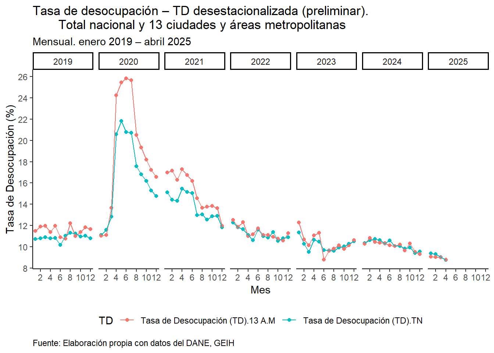
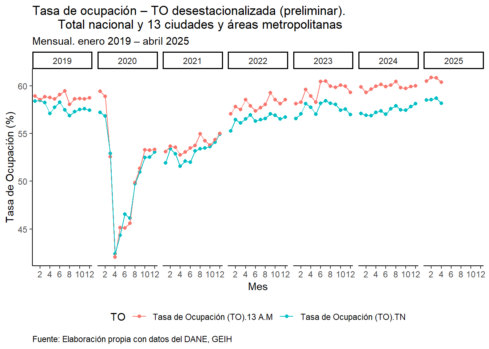
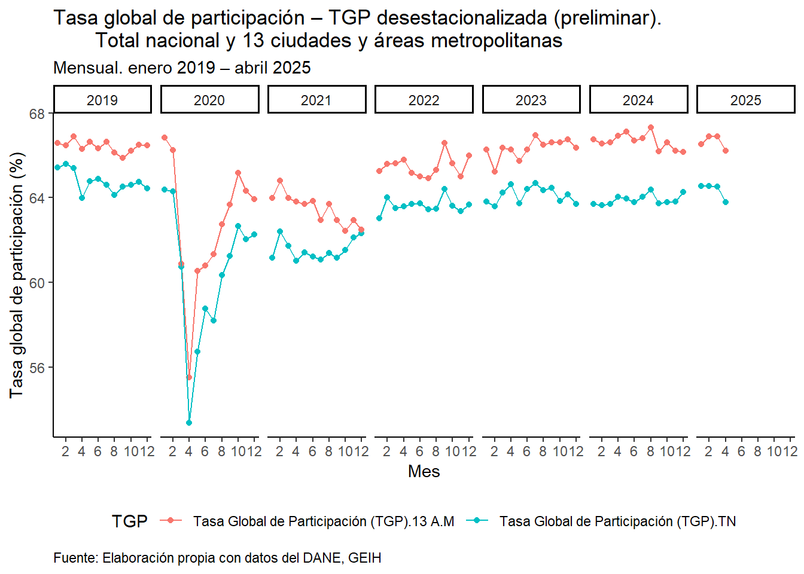

library(readxl)
library(tidyverse)Labour Market in Colombia
Indices
This document presents the process of building some graphs of the evolution of the unemployment, employment and labor force participation rate in Colombia for the last years. The data is made public by the Departamento Administrativo de Colombia (DANE), and you can reproduce this downloading the data set here.
The first step is to load the following libraries:
Now we can load the datasets:
Load data
# Here we load the labour market indices for Total country
df1 = readxl::read_excel("anex-GEIH-Desestacionalizado-abr2025.xlsx",
sheet = "Total nacional",
range = "A12:KG16",
col_names = FALSE)
# Now we load the labour market indices for Total 13 cities and metropolitan areas
df2 = readxl::read_excel("anex-GEIH-Desestacionalizado-abr2025.xlsx",
sheet = "Total 13 ciudades A.M.",
range = "A12:KG16",
col_names = FALSE)Indexing
# Indexing the year and month variables to the dataframes
df1[1, 1] = "Año"
df1[2, 1] = "Mes"
df2[1, 1] = "Año"
df2[2, 1] = "Mes"Lengthening Data
# Total country
df1 = df1 |>
tidyr::pivot_longer(cols = 2:293,
values_to = "value") |>
tidyr::fill(value) |>
tidyr::pivot_wider(names_from = 1,
values_from = value) |>
dplyr::select(Año:`Tasa de Desocupación (TD)`)# Total 13 cities and metropolitan areas
df2 = df2 |>
tidyr::pivot_longer(cols = 2:293,
values_to = "value") |>
tidyr::fill(value) |>
tidyr::pivot_wider(names_from = 1,
values_from = value) |>
dplyr::select(Año:`Tasa de Desocupación (TD)`)Merging Dataframes
# Now we merge both dataframes: total country and 13 cities and metropolitan areas labour market indices by (año and mes)
data = df1 |>
dplyr::inner_join(df2,
by = c("Año", "Mes"),
suffix = c(".TN", ".13 A.M"))
data# A tibble: 292 × 8
Año Mes `Tasa Global de Participación (TGP).TN` Tasa de Ocupación (TO).…¹
<chr> <chr> <chr> <chr>
1 2001 Ene 68.973109335930133 59.101177056750885
2 2001 Feb 68.886306277192389 57.820509345089057
3 2001 Mar 68.612689318468114 57.268868184967694
4 2001 Abr 65.352141192242001 56.424365278839275
5 2001 May 65.890077159012904 56.173420547883879
6 2001 Jun 67.387834923754298 57.250971354256016
7 2001 Jul 67.058138305688757 56.896456850414367
8 2001 Ago 67.693387044713404 57.659423235928777
9 2001 Sep 68.307952145164052 58.21154729985323
10 2001 Oct 67.53053221447675 57.311158091176971
# ℹ 282 more rows
# ℹ abbreviated name: ¹`Tasa de Ocupación (TO).TN`
# ℹ 4 more variables: `Tasa de Desocupación (TD).TN` <chr>,
# `Tasa Global de Participación (TGP).13 A.M` <chr>,
# `Tasa de Ocupación (TO).13 A.M` <chr>,
# `Tasa de Desocupación (TD).13 A.M` <chr>D type transformation
# Now we transform some variables to numeric
data = data |>
dplyr::mutate_at(vars(1, 3:8), as.numeric)
glimpse(data)Rows: 292
Columns: 8
$ Año <dbl> 2001, 2001, 2001, 2001, 20…
$ Mes <chr> "Ene", "Feb", "Mar", "Abr"…
$ `Tasa Global de Participación (TGP).TN` <dbl> 68.97311, 68.88631, 68.612…
$ `Tasa de Ocupación (TO).TN` <dbl> 59.10118, 57.82051, 57.268…
$ `Tasa de Desocupación (TD).TN` <dbl> 14.31273, 16.06386, 16.533…
$ `Tasa Global de Participación (TGP).13 A.M` <dbl> 70.26845, 70.22898, 69.382…
$ `Tasa de Ocupación (TO).13 A.M` <dbl> 57.13410, 57.23657, 56.609…
$ `Tasa de Desocupación (TD).13 A.M` <dbl> 18.69167, 18.50007, 18.408…# Please first notice that some months have asterisks, so we need to replace them too
meses = data |>
dplyr::distinct(Mes)
meses$Mes [1] "Ene" "Feb" "Mar" "Abr" "May" "Jun" "Jul" "Ago" "Sep" "Oct"
[11] "Nov" "Dic" "Jul*" "Ago*"# Now we transform the "string" format of months to "numeric"
data = data |>
dplyr::mutate(
Mes = recode(Mes,
"Ene" = 01, "Feb" = 02,
"Mar" = 03, "Abr" = 04,
"May" = 05, "Jun" = 06,
"Jul" = 07, "Ago" = 08,
"Sep" = 09, "Oct" = 10,
"Nov" = 11, "Dic" = 12,
"Jul*" = 07, "Ago*" = 08))
glimpse(data)Rows: 292
Columns: 8
$ Año <dbl> 2001, 2001, 2001, 2001, 20…
$ Mes <dbl> 1, 2, 3, 4, 5, 6, 7, 8, 9,…
$ `Tasa Global de Participación (TGP).TN` <dbl> 68.97311, 68.88631, 68.612…
$ `Tasa de Ocupación (TO).TN` <dbl> 59.10118, 57.82051, 57.268…
$ `Tasa de Desocupación (TD).TN` <dbl> 14.31273, 16.06386, 16.533…
$ `Tasa Global de Participación (TGP).13 A.M` <dbl> 70.26845, 70.22898, 69.382…
$ `Tasa de Ocupación (TO).13 A.M` <dbl> 57.13410, 57.23657, 56.609…
$ `Tasa de Desocupación (TD).13 A.M` <dbl> 18.69167, 18.50007, 18.408…Filtering
# Then, we filter the data set from 2019:
data = data |>
dplyr::filter(Año >= 2019)Unemployment
Now we filter the data for unemployment and then present the data in the long or stacked format:
unemp = data |>
dplyr::select(Año, Mes,
`Tasa de Desocupación (TD).TN`,
`Tasa de Desocupación (TD).13 A.M`) |>
tidyr::pivot_longer(cols = 3:4,
names_to = "TD",
values_to = "value")
unemp# A tibble: 152 × 4
Año Mes TD value
<dbl> <dbl> <chr> <dbl>
1 2019 1 Tasa de Desocupación (TD).TN 10.7
2 2019 1 Tasa de Desocupación (TD).13 A.M 11.5
3 2019 2 Tasa de Desocupación (TD).TN 10.8
4 2019 2 Tasa de Desocupación (TD).13 A.M 11.9
5 2019 3 Tasa de Desocupación (TD).TN 10.9
6 2019 3 Tasa de Desocupación (TD).13 A.M 12.0
7 2019 4 Tasa de Desocupación (TD).TN 10.8
8 2019 4 Tasa de Desocupación (TD).13 A.M 11.4
9 2019 5 Tasa de Desocupación (TD).TN 10.8
10 2019 5 Tasa de Desocupación (TD).13 A.M 12.0
# ℹ 142 more rowsunemp |>
ggplot(aes(x = Mes, y = value, colour = TD, group = TD)) +
geom_point() +
geom_line() +
facet_grid( . ~ Año) +
scale_x_continuous(breaks = seq(0,12, by=2)) +
scale_y_continuous(breaks = seq(8,26, by=2)) +
theme_classic() +
labs(title = "Tasa de desocupación – TD desestacionalizada (preliminar).
Total nacional y 13 ciudades y áreas metropolitanas",
subtitle = "Mensual. enero 2019 – abril 2025",
x = "Mes",
y = "Tasa de Desocupación (%)",
caption = "Fuente: Elaboración propia con datos del DANE, GEIH") +
theme(plot.caption.position = "panel",
plot.caption = element_text(hjust = 0),
legend.position = "bottom")
Employment
Now we filter the data for employment and then present the data in the long or stacked format:
emp = data |>
dplyr::select(Año, Mes,
`Tasa de Ocupación (TO).TN`,
`Tasa de Ocupación (TO).13 A.M`) |>
tidyr::pivot_longer(cols = 3:4,
names_to = "TO",
values_to = "value")
emp# A tibble: 152 × 4
Año Mes TO value
<dbl> <dbl> <chr> <dbl>
1 2019 1 Tasa de Ocupación (TO).TN 58.4
2 2019 1 Tasa de Ocupación (TO).13 A.M 58.9
3 2019 2 Tasa de Ocupación (TO).TN 58.5
4 2019 2 Tasa de Ocupación (TO).13 A.M 58.6
5 2019 3 Tasa de Ocupación (TO).TN 58.3
6 2019 3 Tasa de Ocupación (TO).13 A.M 58.9
7 2019 4 Tasa de Ocupación (TO).TN 57.1
8 2019 4 Tasa de Ocupación (TO).13 A.M 58.8
9 2019 5 Tasa de Ocupación (TO).TN 57.8
10 2019 5 Tasa de Ocupación (TO).13 A.M 58.7
# ℹ 142 more rowsemp |>
ggplot(aes(x = Mes, y = value, colour = TO, group = TO)) +
geom_point() +
geom_line() +
facet_grid( . ~ Año) +
scale_x_continuous(breaks = seq(0,12, by=2)) +
theme_classic() +
labs(title = "Tasa de ocupación – TO desestacionalizada (preliminar).
Total nacional y 13 ciudades y áreas metropolitanas",
subtitle = "Mensual. enero 2019 – abril 2025",
x = "Mes",
y = "Tasa de Ocupación (%)",
caption = "Fuente: Elaboración propia con datos del DANE, GEIH") +
theme(plot.caption.position = "panel",
plot.caption = element_text(hjust = 0),
legend.position = "bottom") 
Labor Force Participation
Now we filter the data for labor force participation rate and then present the data in the long or stacked format:
lfp = data |>
dplyr::select(Año, Mes,
`Tasa Global de Participación (TGP).TN`,
`Tasa Global de Participación (TGP).13 A.M` ) |>
tidyr::pivot_longer(cols = 3:4,
names_to = "TGP",
values_to = "value")
lfp# A tibble: 152 × 4
Año Mes TGP value
<dbl> <dbl> <chr> <dbl>
1 2019 1 Tasa Global de Participación (TGP).TN 65.4
2 2019 1 Tasa Global de Participación (TGP).13 A.M 66.6
3 2019 2 Tasa Global de Participación (TGP).TN 65.6
4 2019 2 Tasa Global de Participación (TGP).13 A.M 66.5
5 2019 3 Tasa Global de Participación (TGP).TN 65.4
6 2019 3 Tasa Global de Participación (TGP).13 A.M 66.9
7 2019 4 Tasa Global de Participación (TGP).TN 64.0
8 2019 4 Tasa Global de Participación (TGP).13 A.M 66.3
9 2019 5 Tasa Global de Participación (TGP).TN 64.8
10 2019 5 Tasa Global de Participación (TGP).13 A.M 66.6
# ℹ 142 more rowslfp |>
ggplot(aes(x = Mes, y = value, colour = TGP, group = TGP)) +
geom_point() +
geom_line() +
facet_grid( . ~ Año) +
scale_x_continuous(breaks = seq(0,12, by=2)) +
theme_classic() +
labs(title = "Tasa global de participación – TGP desestacionalizada (preliminar).
Total nacional y 13 ciudades y áreas metropolitanas",
subtitle = "Mensual. enero 2019 – abril 2025",
x = "Mes",
y = "Tasa global de participación (%)",
caption = "Fuente: Elaboración propia con datos del DANE, GEIH") +
theme(plot.caption.position = "panel",
plot.caption = element_text(hjust = 0),
legend.position = "bottom") 
Conclusion
First, we can notice that the main labor market rates are highly associated with the economic activity. You can observe that the unemployment rate has stabilized at levels slightly below the pre-pandemic numbers, but at degrees still considered highly for this country. On the other hand, the labor market is also observing growth in the employment rates. The analysts and policy-makers seek to achieve an economic growth of 2.6% in 2025. The Colombian economy is facing a strong challenge in the past years in reducing the unemployment rate in the long run, mainly because there are divergences in the jobs creation of the formal relative to the informal sector, and because of the excessive burdens the companies face at hiring people, summed to the economic policies of the minimum wage that are insufficient to reach the most labor market people.